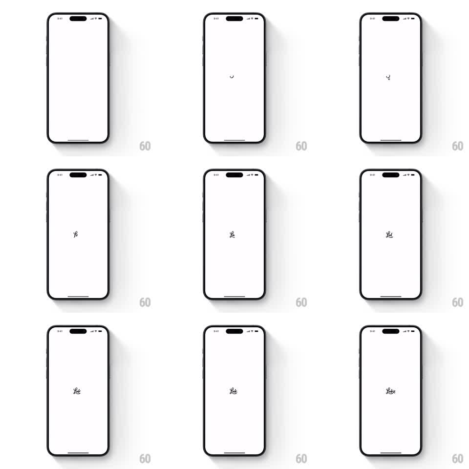

Media
Frame-by-frame

Rebuild this animation 1:1: Lake's app launch splash - a minimal circular loading arc at screen center seamlessly morphs into the cursive "Lake" wordmark, drawn stroke by stroke like handwriting.

Rebuild this animation 1:1: Lake's app launch splash - a minimal circular loading arc at screen center seamlessly morphs into the cursive "Lake" wordmark, drawn stroke by stroke like handwriting. ## Integration Integration: stack-agnostic spec - springs given as stiffness/damping, timed motions as duration + curve; map every value to your framework and animation library of choice. ## Scene Pure white launch screen, status bar visible, one tiny black mark at dead center. Nothing else on screen. ## Motion spec Pattern: loader-to-logo path morph. - Start: a small circular spinner arc (~16px) rotating at center (~1 rev/s). - The arc slows, closes, and its stroke tip continues as the first upstroke of the cursive "L" (~300ms) - no cut between spinner and letterform. - The word "Lake" writes itself left to right in a single connected cursive path (~1.2s total), stroke width ~3px, slight hand irregularity. - Final logo rests at center (~1s hold) before the app transitions in. ## Calibration - The spinner-to-letter continuity is the trick: one stroke, no seam. - Keep the cursive loose and human, not a geometric script font. ## Reduced motion Skip the spinner; logo fades in fully formed (200ms). ## Don't miss - One continuous path from loader to logo - any opacity crossfade breaks the illusion. - Total sequence ~3s; no sound, no background change.